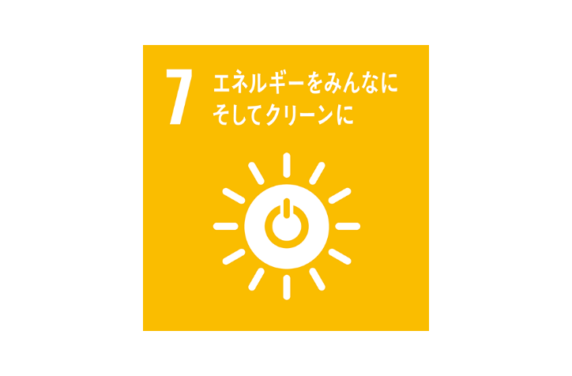

SDGｓとは
SDGsとは「Sustainable Development Goals（持続可能な開発目標）」の略称。2000年に採択されたMDGs（ミレニアム開発目標）の達成期限を迎えた2015年に、国連によって採択された、2030年までの15年間で新たに達成すべき国際目標です。掲げられた目標は17。それぞれの目標の下に10個ほど、全部で169の具体的なターゲット目標が示され、さらにその下に詳細な指標が全244に設定される3段階の念入りな構造になっています。しかも、この達成度合いは、年1回の「持続可能な開発に関するハイレベル政治フォーラム」で各国から報告され、ランキングとして発表。全世界からモニタリングされる仕組みからも、目標達成への国連の本気度がうかがえます。
そんな世界が注目している中、私たちが注目したSDGsは、7，エネルギーをみんなに、そしてクリーンに現在のエネルギーは，石油，石炭，天然ガスの化石エネルギーが中心です。ついで原子力，再生可能エネルギーとなっています。化石エネルギーは限りのある資源で，このペースで使い続けると100年後にはほとんど使い果たしてしまうという予測もあります。また，化石エネルギーを作り出すときに二酸化炭素が発生するのも問題です。このまま化石エネルギーの消費量が増え続けると，温暖化や気候変動がますます深刻になるといわれています。
そこで未来のエネルギーとして，世界が力を入れているのが再生可能エネルギーです。世界の最終エネルギー消費の約18.1％が再生可能エネルギーで，先進国を中心に積極的に導入されています。
そんな難しい問題を解決するのは私たちだけの力だけでは難しいかも知れない。しかし私たちがやれることが沢山あります。
それは、日頃から節電を心がけ，エネルギーを上手に使う工夫をすること，それにつきます。
そんな節電やエネルギーを節約することを考えたものが私たちのアプリになります。